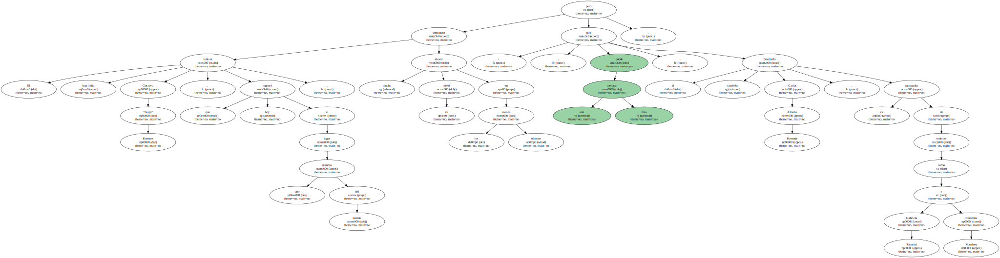
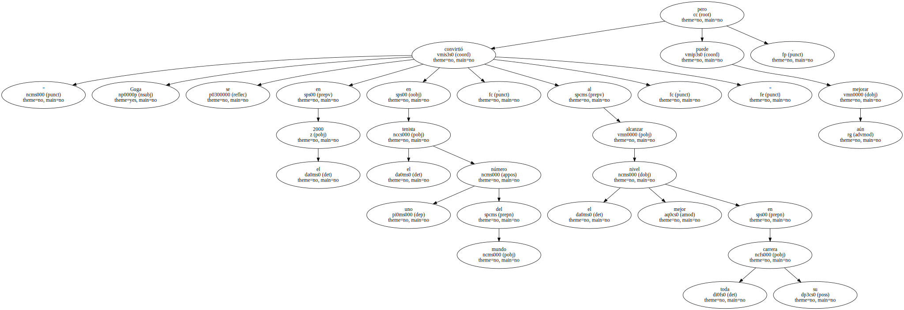
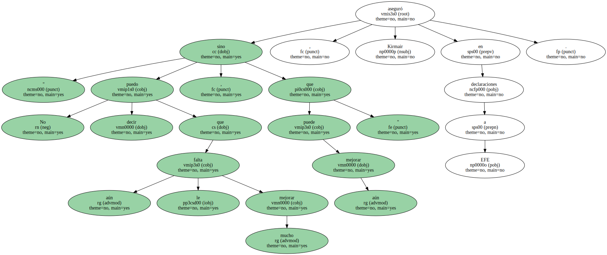
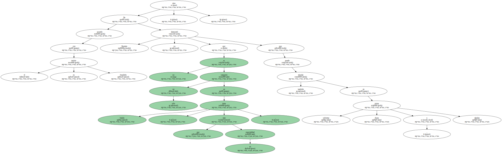
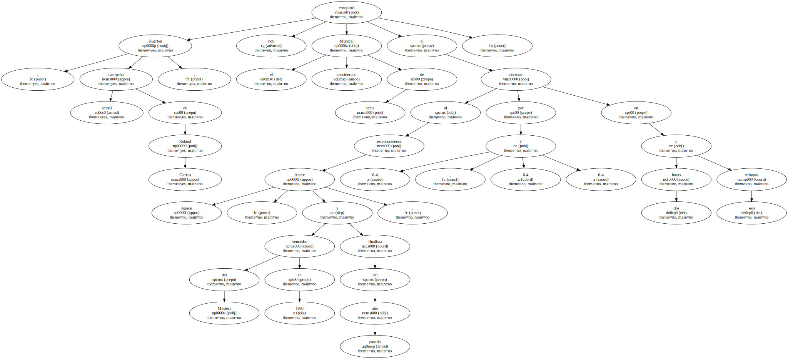
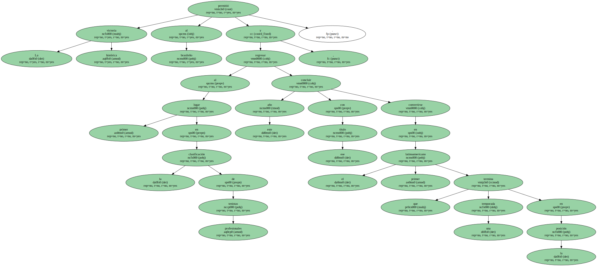
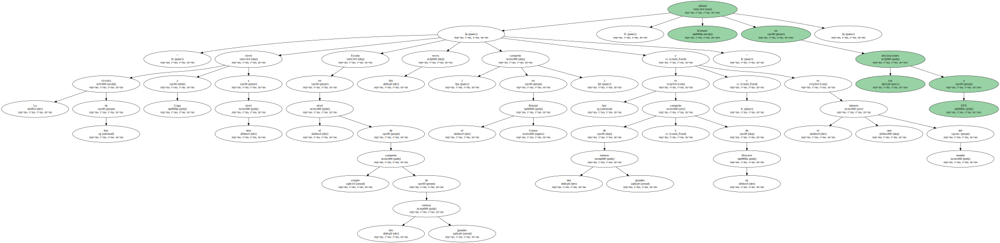
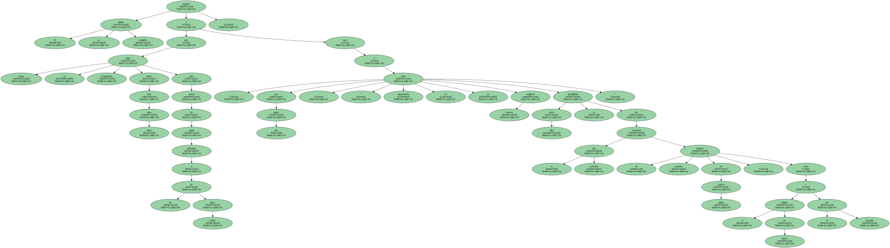
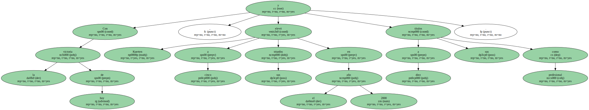

- El tenista brasileño Gustavo "Guga" Kuerten , que hoy regresó al lugar número uno del mundo , consiguió elevar mucho su nivel en los últimos meses , pero aún puede mejorar más , dijo el también brasileño Carlos Alberto Kirmair , ex entrenador de tenistas como Gabriela Sabatini y Conchita Martínez.
" Guga se convirtió en el 2000 en el tenista número uno del mundo , al alcanzar el mejor nivel en toda su carrera , " pero aún puede mejorar.
" No puedo decir que aún le falta mejorar mucho , sino que aún puede mejorar " , aseguró Kirmair en declaraciones a EFE.
De acuerdo con el ex tenista brasileño , Kuerten ya demostró que no es sólo un campeón en tierra batida , que eran su especialidad , sino que también puede triunfar en pistas cubiertas , duras y rápidas.
Kuerten , actual campeón de Roland Garros , conquistó hoy el considerado Mundial de tenis al derrotar al estadounidense Andre Agassi , vencedor del Masters en 1990 y finalista del año pasado , por 6-4 , 6-4 y 6-4 en dos horas y seis minutos.
La histórica victoria permitió al brasileño regresar al primer lugar en la clasificación de tenistas profesionales , concluir este año con ese título y convertirse en el primer latinoamericano que termina una temporada en la posición.
" La victoria de hoy elevó a Guga a otro nivel . Estaba en el nivel de simple campeón de dos grandes torneos ( dos veces campeón en el Roland Garros ) y hoy es campeón de dos grandes torneos y de un Masters , y es el número uno del mundo " , afirmó Kirmair en sus declaraciones a EFE.
El ex tenista brasileño aseguró que Guga se viene preparando desde hace cinco años para vencer en pistas diferentes a las de tierra batida y que , por esa razón , " seguramente ya se trazó nuevos objetivos y entre ellos la posibilidad de conquistar el próximo año los grandes torneos de cuadra rápida , como el abierto de EEUU o el de Australia ".
" Guga viene trabajando desde hace mucho tiempo para ser un jugador completo , y ya está muy cerca de esa meta . Ahora él no es sólo un jugador más completo como un jugador más maduro " , agregó.

Con la victoria de hoy , Kuerten elevó a cinco sus triunfos en el año 2000 y a diez sus títulos como profesional.
